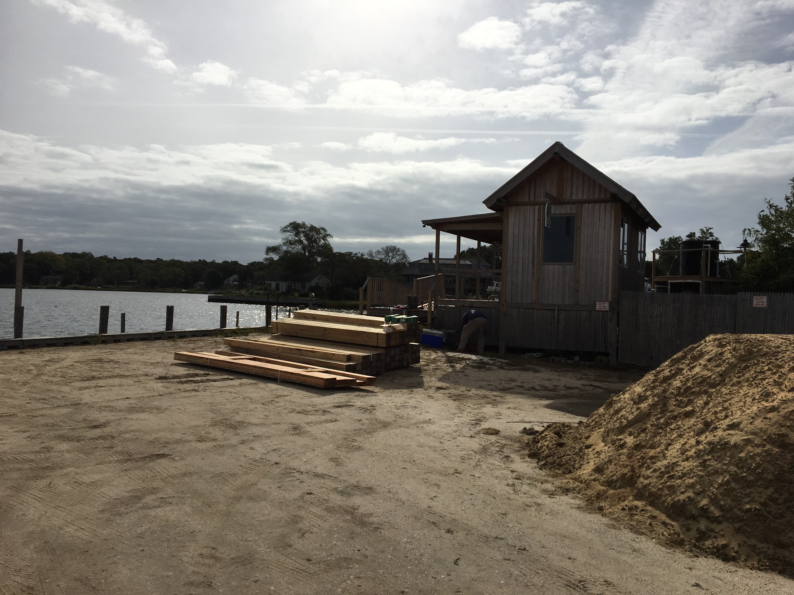

Why Bussiness Management?
 
I chose Bussiness Management as a major because my Eagle Scout project inspired me to explore the field. My project was raising the height of a bulkhead at my towns local shellfish hatchery. The shellfish hatchery breeds oysters to clean the water, then sells them to the town. The bulkhead needed to be raised to eliminate pollution that was being washed out into the breeding grounds, making the oysters sick. I had to manage a budget, materials, workers, tools, and everyone’s safety. I enjoyed being in charge and watching my project rise from the ground up. Once all the pieces were in place I was left with a finished product that I managed all by myself. Looking back on it I enjoyed most of process of managing a project which is why I chose this major.
Follow @chrisg1141
Home Page |
Music/Hobbies |
Europe Trip |
My Major
I chose Bussiness Management as a major because my Eagle Scout project inspired me to explore the field. My project was raising the height of a bulkhead at my towns local shellfish hatchery. The shellfish hatchery breeds oysters to clean the water, then sells them to the town. The bulkhead needed to be raised to eliminate pollution that was being washed out into the breeding grounds, making the oysters sick. I had to manage a budget, materials, workers, tools, and everyone’s safety. I enjoyed being in charge and watching my project rise from the ground up. Once all the pieces were in place I was left with a finished product that I managed all by myself. Looking back on it I enjoyed most of process of managing a project which is why I chose this major.